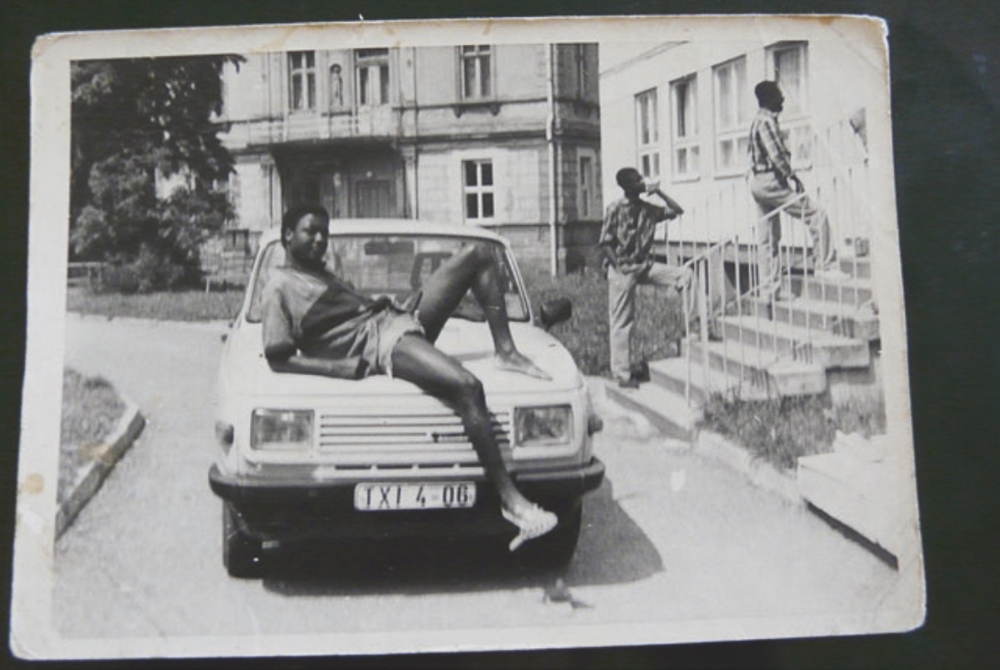

Spaces of Labor, Spaces of Life: Mozambican Vertragsarbeiter in the German Democratic Republic, 1984-1990
Holly Bushman
ARC550: Space and Subjectivity: Labor's Histories
Final Project Prospectus Presentation
March 31, 2023
Abstract
Data set
Bibliography

Juma Madiera in front of his hostel in Zschopau, East Germany, c. 1984.
Source: Marcia C. Schenck, Remembering African Labor Migration to the Second World: Socialist Mobilities Between Angola, Mozambique, and East Germany. London: Palgrave Macmillan, 2023.